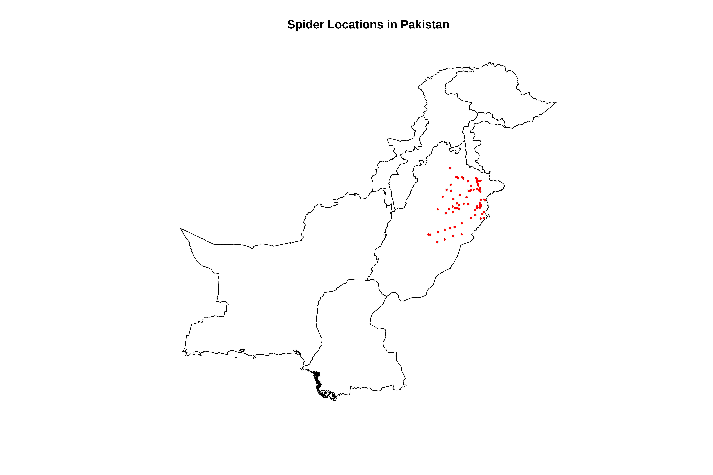
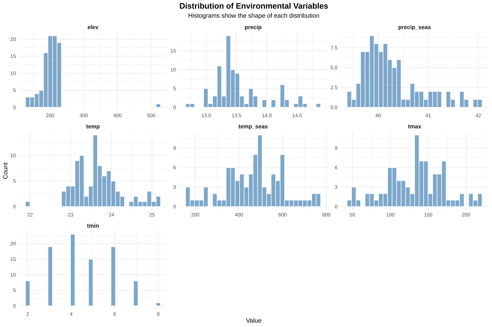

Dr Tahir Ali | AG de Meaux | TRR341 Ecological Genomics | University of Cologne
Session Overview
Before building species distribution models, we must understand the structure of environmental predictors. This includes:
inspecting distributions
detecting skewness and outliers
checking correlations
applying transformations where appropriate
These steps help ensure statistical validity and ecological interpretability.
0. Extract Climate Variables (Run only Once)
A step-by-step R script to extract 19 climate variables from the WorldClim rasters using your spider coordinates file and save as CSV file for the downstream analysis
Show codeHide codeCopyable source
# ==============================================================================# STEP 1: LOAD REQUIRED PACKAGES# ==============================================================================# Load the terra package - this helps us work with raster files (like the climate data)# If you don't have it installed, run: install.packages("terra")library(terra)# Load the dplyr package - this helps us manipulate data tables# If you don't have it installed, run: install.packages("dplyr")library(dplyr)# ==============================================================================# STEP 2: READ THE SPIDER COORDINATES FILE# ==============================================================================# Read the CSV file containing spider presence coordinates# The file path points to where your spider data is storedspiders <-read.csv2("/run/media/tahirali/Expansion/github/spatial-ecology-workshop/data/presence/spider_coords.csv",header =TRUE) # header=TRUE means the first row contains column names# Look at the first few rows to check the data loaded correctlyhead(spiders) # This shows you the structure of your data# ==============================================================================# STEP 3: CLEAN THE COORDINATE DATA# ==============================================================================# In some countries, decimals are written with commas (like 45,678 instead of 45.678)# R needs dots (.) for decimals, so we convert commas to dotsspiders$X <-as.numeric(gsub(",", ".", spiders$X)) # Convert X coordinatespiders$Y <-as.numeric(gsub(",", ".", spiders$Y)) # Convert Y coordinate# Check if there are any duplicate records (same spider recorded twice)# We use distinct() to keep only unique rowsspiders <-distinct(spiders)# Tell us how many unique spider locations we havecat("Loaded", nrow(spiders), "unique spider records\n")# ==============================================================================# STEP 4: LOAD THE 19 BIOCLIM RASTER FILES# ==============================================================================# Define the folder path where all climate rasters are storedclimate_folder <-"/run/media/tahirali/Expansion/github/spatial-ecology-workshop/data/climate/"# List all the bioclim files in that folder# pattern = ".tif$" means we want files ending with .tif (raster files)bio_files <-list.files(climate_folder, pattern =".tif$", full.names =TRUE)# Show how many files we found (should be 20 - 19 bioclim + 1 elevation)cat("Found", length(bio_files), "raster files\n")# Load all raster files as a single "raster stack"# This combines all 19 climate layers into one object for easy extractionclimate_stack <-rast(bio_files)# Check the names of the loaded layers (they currently have generic names like wc2.1_2.5m_bio_1)names(climate_stack)# ==============================================================================# STEP 5: GIVE MEANINGFUL NAMES TO ALL 19 BIOCLIM VARIABLES# ==============================================================================# Create a vector of meaningful names for each Bioclim variable# These names follow the standard WorldClim BIO1-BIO19 nomenclaturemeaningful_names <-c("bio1_annual_mean_temp", # BIO1 = Annual Mean Temperature"bio2_mean_diurnal_range", # BIO2 = Mean Diurnal Range (Mean of monthly (max temp - min temp))"bio3_isothermality", # BIO3 = Isothermality (BIO2/BIO7) (* 100)"bio4_temp_seasonality", # BIO4 = Temperature Seasonality (standard deviation *100)"bio5_max_temp_warmest_month", # BIO5 = Max Temperature of Warmest Month"bio6_min_temp_coldest_month", # BIO6 = Min Temperature of Coldest Month"bio7_temp_annual_range", # BIO7 = Temperature Annual Range (BIO5-BIO6)"bio8_mean_temp_wettest_quarter", # BIO8 = Mean Temperature of Wettest Quarter"bio9_mean_temp_driest_quarter", # BIO9 = Mean Temperature of Driest Quarter"bio10_mean_temp_warmest_quarter", # BIO10 = Mean Temperature of Warmest Quarter"bio11_mean_temp_coldest_quarter", # BIO11 = Mean Temperature of Coldest Quarter"bio12_annual_precip", # BIO12 = Annual Precipitation"bio13_precip_wettest_month", # BIO13 = Precipitation of Wettest Month"bio14_precip_driest_month", # BIO14 = Precipitation of Driest Month"bio15_precip_seasonality", # BIO15 = Precipitation Seasonality (Coefficient of Variation)"bio16_precip_wettest_quarter", # BIO16 = Precipitation of Wettest Quarter"bio17_precip_driest_quarter", # BIO17 = Precipitation of Driest Quarter"bio18_precip_warmest_quarter", # BIO18 = Precipitation of Warmest Quarter"bio19_precip_coldest_quarter", # BIO19 = Precipitation of Coldest Quarter"elevation"# The 20th file is elevation (not a Bioclim variable))# Assign these meaningful names to the climate stacknames(climate_stack) <- meaningful_names# Verify the new namescat("\n=== New variable names assigned ===\n")print(names(climate_stack))# ==============================================================================# STEP 6: EXTRACT CLIMATE DATA FOR SPIDER POINTS# ==============================================================================# This is the main step - extract climate values at each spider coordinate# The extract() function takes the raster stack and the points (X,Y coordinates)spider_climate <-extract(climate_stack, spiders[, c("X", "Y")])# Look at what we extracted - now with meaningful column names!cat("\nFirst few rows of extracted climate data:\n")head(spider_climate)# ==============================================================================# STEP 7: COMBINE SPIDER DATA WITH CLIMATE DATA# ==============================================================================# Remove the ID column that extract() adds automaticallyspider_climate <- spider_climate[, -1] # -1 means "remove the first column"# Combine the original spider data with the climate data# cbind() means "column bind" - it puts two data frames side by sidefinal_data <-cbind(spiders, spider_climate)# Check the final combined data with meaningful namescat("\nFinal dataset with meaningful variable names:\n")head(final_data)# Show all column names to verifycat("\nColumn names in final dataset:\n")print(names(final_data))# ==============================================================================# STEP 8: SAVE AS CSV FILE FOR LATER USE# ==============================================================================# Save the complete dataset as a CSV file# This file can now be used for all subsequent analyseswrite.csv(final_data, file ="/run/media/tahirali/Expansion/github/spatial-ecology-workshop/data/spider_climate_data.csv",row.names =FALSE) # row.names=FALSE prevents R from adding its own row numbers# Confirm the file was savedcat("\n=== SAVING COMPLETE ===\n")cat("Climate data saved to: /run/media/tahirali/Expansion/github/spatial-ecology-workshop/data/spider_climate_data.csv\n")cat("Total records saved:", nrow(final_data), "\n")cat("Total columns (spider info + 20 environmental variables):", ncol(final_data), "\n")# ==============================================================================# STEP 9: LOOK AT BASIC SUMMARY STATISTICS WITH MEANINGFUL NAMES# ==============================================================================# Show summary statistics for all climate variablescat("\n=== SUMMARY STATISTICS FOR ALL ENVIRONMENTAL VARIABLES ===\n")summary(final_data[, 3:ncol(final_data)]) # 3:ncol() means "from column 3 to the last column"# ==============================================================================# STEP 10: CREATE A QUICK REFERENCE GUIDE# ==============================================================================# Create a data frame explaining what each variable meansvariable_guide <-data.frame(Column_Name =names(final_data)[3:ncol(final_data)],Description =c("Annual Mean Temperature (°C)","Mean Diurnal Range: Mean of monthly (max temp - min temp) (°C)","Isothermality: (BIO2/BIO7) × 100","Temperature Seasonality: standard deviation × 100","Max Temperature of Warmest Month (°C)","Min Temperature of Coldest Month (°C)","Temperature Annual Range: BIO5 - BIO6 (°C)","Mean Temperature of Wettest Quarter (°C)","Mean Temperature of Driest Quarter (°C)","Mean Temperature of Warmest Quarter (°C)","Mean Temperature of Coldest Quarter (°C)","Annual Precipitation (mm)","Precipitation of Wettest Month (mm)","Precipitation of Driest Month (mm)","Precipitation Seasonality: Coefficient of Variation","Precipitation of Wettest Quarter (mm)","Precipitation of Driest Quarter (mm)","Precipitation of Warmest Quarter (mm)","Precipitation of Coldest Quarter (mm)","Elevation (meters above sea level)" ))# Save the variable guide as a separate CSV for referencewrite.csv(variable_guide, file ="/run/media/tahirali/Expansion/github/spatial-ecology-workshop/data/climate_variable_guide.csv",row.names =FALSE)cat("\n=== VARIABLE GUIDE CREATED ===\n")cat("A guide to all variable meanings saved to: /run/media/tahirali/Expansion/github/spatial-ecology-workshop/data/climate_variable_guide.csv\n")print(variable_guide)
X Y
1 74.24942 31.44471
2 74.24942 31.44471
3 74.24942 31.44471
4 74.22886 31.46673
5 74.22886 31.46673
6 74.22886 31.46673
Loaded 93 unique spider records
Found 20 raster files
[1] "wc2.1_2.5m_bio_1" "wc2.1_2.5m_bio_10" "wc2.1_2.5m_bio_11"
[4] "wc2.1_2.5m_bio_12" "wc2.1_2.5m_bio_13" "wc2.1_2.5m_bio_14"
[7] "wc2.1_2.5m_bio_15" "wc2.1_2.5m_bio_16" "wc2.1_2.5m_bio_17"
[10] "wc2.1_2.5m_bio_18" "wc2.1_2.5m_bio_19" "wc2.1_2.5m_bio_2"
[13] "wc2.1_2.5m_bio_3" "wc2.1_2.5m_bio_4" "wc2.1_2.5m_bio_5"
[16] "wc2.1_2.5m_bio_6" "wc2.1_2.5m_bio_7" "wc2.1_2.5m_bio_8"
[19] "wc2.1_2.5m_bio_9" "wc2.1_2.5m_elev"
=== New variable names assigned ===
[1] "bio1_annual_mean_temp" "bio2_mean_diurnal_range"
[3] "bio3_isothermality" "bio4_temp_seasonality"
[5] "bio5_max_temp_warmest_month" "bio6_min_temp_coldest_month"
[7] "bio7_temp_annual_range" "bio8_mean_temp_wettest_quarter"
[9] "bio9_mean_temp_driest_quarter" "bio10_mean_temp_warmest_quarter"
[11] "bio11_mean_temp_coldest_quarter" "bio12_annual_precip"
[13] "bio13_precip_wettest_month" "bio14_precip_driest_month"
[15] "bio15_precip_seasonality" "bio16_precip_wettest_quarter"
[17] "bio17_precip_driest_quarter" "bio18_precip_warmest_quarter"
[19] "bio19_precip_coldest_quarter" "elevation"
First few rows of extracted climate data:
ID bio1_annual_mean_temp bio2_mean_diurnal_range bio3_isothermality
1 1 24.10500 32.08733 14.00867
2 2 24.05683 31.98133 13.98867
3 3 23.98133 32.06467 13.80600
4 4 23.98133 32.06467 13.80600
5 5 23.98133 32.06467 13.80600
6 6 23.98133 32.06467 13.80600
bio4_temp_seasonality bio5_max_temp_warmest_month bio6_min_temp_coldest_month
1 467 136 4
2 474 139 4
3 456 133 4
4 456 133 4
5 456 133 4
6 456 133 4
bio7_temp_annual_range bio8_mean_temp_wettest_quarter
1 111.3598 308
2 111.9311 313
3 112.1244 303
4 112.1244 303
5 112.1244 303
6 112.1244 303
bio9_mean_temp_driest_quarter bio10_mean_temp_warmest_quarter
1 21 192
2 21 195
3 20 187
4 20 187
5 20 187
6 20 187
bio11_mean_temp_coldest_quarter bio12_annual_precip
1 51 13.13000
2 52 12.98900
3 49 13.34933
4 49 13.34933
5 49 13.34933
6 49 13.34933
bio13_precip_wettest_month bio14_precip_driest_month bio15_precip_seasonality
1 38.21749 753.0319 40.088
2 38.09985 749.9002 39.932
3 38.33812 760.3315 40.200
4 38.33812 760.3315 40.200
5 38.33812 760.3315 40.200
6 38.33812 760.3315 40.200
bio16_precip_wettest_quarter bio17_precip_driest_quarter
1 5.732 34.356
2 5.840 34.092
3 5.380 34.820
4 5.380 34.820
5 5.380 34.820
6 5.380 34.820
bio18_precip_warmest_quarter bio19_precip_coldest_quarter elevation
1 30.57733 19.45600 207
2 30.50533 19.47667 206
3 30.51733 19.29333 206
4 30.51733 19.29333 206
5 30.51733 19.29333 206
6 30.51733 19.29333 206
Final dataset with meaningful variable names:
X Y bio1_annual_mean_temp bio2_mean_diurnal_range
1 74.24942 31.44471 24.10500 32.08733
2 74.22886 31.46673 24.05683 31.98133
3 74.21580 31.41358 23.98133 32.06467
4 74.22285 31.40976 23.98133 32.06467
5 74.22158 31.40849 23.98133 32.06467
6 74.22484 31.40526 23.98133 32.06467
bio3_isothermality bio4_temp_seasonality bio5_max_temp_warmest_month
1 14.00867 467 136
2 13.98867 474 139
3 13.80600 456 133
4 13.80600 456 133
5 13.80600 456 133
6 13.80600 456 133
bio6_min_temp_coldest_month bio7_temp_annual_range
1 4 111.3598
2 4 111.9311
3 4 112.1244
4 4 112.1244
5 4 112.1244
6 4 112.1244
bio8_mean_temp_wettest_quarter bio9_mean_temp_driest_quarter
1 308 21
2 313 21
3 303 20
4 303 20
5 303 20
6 303 20
bio10_mean_temp_warmest_quarter bio11_mean_temp_coldest_quarter
1 192 51
2 195 52
3 187 49
4 187 49
5 187 49
6 187 49
bio12_annual_precip bio13_precip_wettest_month bio14_precip_driest_month
1 13.13000 38.21749 753.0319
2 12.98900 38.09985 749.9002
3 13.34933 38.33812 760.3315
4 13.34933 38.33812 760.3315
5 13.34933 38.33812 760.3315
6 13.34933 38.33812 760.3315
bio15_precip_seasonality bio16_precip_wettest_quarter
1 40.088 5.732
2 39.932 5.840
3 40.200 5.380
4 40.200 5.380
5 40.200 5.380
6 40.200 5.380
bio17_precip_driest_quarter bio18_precip_warmest_quarter
1 34.356 30.57733
2 34.092 30.50533
3 34.820 30.51733
4 34.820 30.51733
5 34.820 30.51733
6 34.820 30.51733
bio19_precip_coldest_quarter elevation
1 19.45600 207
2 19.47667 206
3 19.29333 206
4 19.29333 206
5 19.29333 206
6 19.29333 206
Column names in final dataset:
[1] "X" "Y"
[3] "bio1_annual_mean_temp" "bio2_mean_diurnal_range"
[5] "bio3_isothermality" "bio4_temp_seasonality"
[7] "bio5_max_temp_warmest_month" "bio6_min_temp_coldest_month"
[9] "bio7_temp_annual_range" "bio8_mean_temp_wettest_quarter"
[11] "bio9_mean_temp_driest_quarter" "bio10_mean_temp_warmest_quarter"
[13] "bio11_mean_temp_coldest_quarter" "bio12_annual_precip"
[15] "bio13_precip_wettest_month" "bio14_precip_driest_month"
[17] "bio15_precip_seasonality" "bio16_precip_wettest_quarter"
[19] "bio17_precip_driest_quarter" "bio18_precip_warmest_quarter"
[21] "bio19_precip_coldest_quarter" "elevation"
=== SAVING COMPLETE ===
Climate data saved to: /run/media/tahirali/Expansion/github/spatial-ecology-workshop/data/spider_climate_data.csv
Total records saved: 93
Total columns (spider info + 20 environmental variables): 22
=== SUMMARY STATISTICS FOR ALL ENVIRONMENTAL VARIABLES ===
bio1_annual_mean_temp bio2_mean_diurnal_range bio3_isothermality
Min. :21.94 Min. :30.24 Min. :11.60
1st Qu.:23.23 1st Qu.:31.45 1st Qu.:12.94
Median :23.64 Median :31.89 Median :13.10
Mean :23.67 Mean :31.99 Mean :13.28
3rd Qu.:23.98 3rd Qu.:32.21 3rd Qu.:13.63
Max. :25.15 Max. :33.81 Max. :14.24
bio4_temp_seasonality bio5_max_temp_warmest_month bio6_min_temp_coldest_month
Min. :166.0 Min. : 46.0 Min. :2.000
1st Qu.:377.0 1st Qu.:107.0 1st Qu.:3.000
Median :471.0 Median :136.0 Median :4.000
Mean :466.9 Mean :132.8 Mean :4.495
3rd Qu.:566.0 3rd Qu.:159.0 3rd Qu.:6.000
Max. :764.0 Max. :218.0 Max. :8.000
bio7_temp_annual_range bio8_mean_temp_wettest_quarter
Min. : 87.09 Min. :106.0
1st Qu.:105.52 1st Qu.:243.0
Median :108.97 Median :303.0
Mean :107.85 Mean :302.8
3rd Qu.:111.28 3rd Qu.:368.0
Max. :114.01 Max. :508.0
bio9_mean_temp_driest_quarter bio10_mean_temp_warmest_quarter
Min. :10.00 Min. : 68.0
1st Qu.:18.00 1st Qu.:175.0
Median :22.00 Median :203.0
Mean :22.46 Mean :194.9
3rd Qu.:28.00 3rd Qu.:226.0
Max. :39.00 Max. :283.0
bio11_mean_temp_coldest_quarter bio12_annual_precip bio13_precip_wettest_month
Min. : 24.00 Min. :12.70 Min. :37.13
1st Qu.: 44.00 1st Qu.:13.32 1st Qu.:37.79
Median : 53.00 Median :13.41 Median :37.99
Mean : 58.25 Mean :13.56 Mean :38.21
3rd Qu.: 74.00 3rd Qu.:13.77 3rd Qu.:38.47
Max. :102.00 Max. :14.85 Max. :39.87
bio14_precip_driest_month bio15_precip_seasonality
Min. :743.4 Min. :39.42
1st Qu.:760.3 1st Qu.:39.87
Median :767.6 Median :40.12
Mean :777.1 Mean :40.29
3rd Qu.:796.8 3rd Qu.:40.46
Max. :827.0 Max. :42.03
bio16_precip_wettest_quarter bio17_precip_driest_quarter
Min. :2.656 Min. :33.73
1st Qu.:4.504 1st Qu.:34.84
Median :4.732 Median :35.37
Mean :4.813 Mean :35.47
3rd Qu.:5.200 3rd Qu.:36.03
Max. :6.276 Max. :37.54
bio18_precip_warmest_quarter bio19_precip_coldest_quarter elevation
Min. :28.77 Min. :17.39 Min. :134.0
1st Qu.:29.72 1st Qu.:18.60 1st Qu.:189.0
Median :30.34 Median :18.90 Median :206.0
Mean :30.47 Mean :18.94 Mean :203.8
3rd Qu.:30.87 3rd Qu.:19.17 3rd Qu.:216.0
Max. :33.71 Max. :20.18 Max. :521.0
=== VARIABLE GUIDE CREATED ===
A guide to all variable meanings saved to: /run/media/tahirali/Expansion/github/spatial-ecology-workshop/data/climate_variable_guide.csv
Column_Name
1 bio1_annual_mean_temp
2 bio2_mean_diurnal_range
3 bio3_isothermality
4 bio4_temp_seasonality
5 bio5_max_temp_warmest_month
6 bio6_min_temp_coldest_month
7 bio7_temp_annual_range
8 bio8_mean_temp_wettest_quarter
9 bio9_mean_temp_driest_quarter
10 bio10_mean_temp_warmest_quarter
11 bio11_mean_temp_coldest_quarter
12 bio12_annual_precip
13 bio13_precip_wettest_month
14 bio14_precip_driest_month
15 bio15_precip_seasonality
16 bio16_precip_wettest_quarter
17 bio17_precip_driest_quarter
18 bio18_precip_warmest_quarter
19 bio19_precip_coldest_quarter
20 elevation
Description
1 Annual Mean Temperature (°C)
2 Mean Diurnal Range: Mean of monthly (max temp - min temp) (°C)
3 Isothermality: (BIO2/BIO7) × 100
4 Temperature Seasonality: standard deviation × 100
5 Max Temperature of Warmest Month (°C)
6 Min Temperature of Coldest Month (°C)
7 Temperature Annual Range: BIO5 - BIO6 (°C)
8 Mean Temperature of Wettest Quarter (°C)
9 Mean Temperature of Driest Quarter (°C)
10 Mean Temperature of Warmest Quarter (°C)
11 Mean Temperature of Coldest Quarter (°C)
12 Annual Precipitation (mm)
13 Precipitation of Wettest Month (mm)
14 Precipitation of Driest Month (mm)
15 Precipitation Seasonality: Coefficient of Variation
16 Precipitation of Wettest Quarter (mm)
17 Precipitation of Driest Quarter (mm)
18 Precipitation of Warmest Quarter (mm)
19 Precipitation of Coldest Quarter (mm)
20 Elevation (meters above sea level)
Quick Reference: What Each Bioclim Variable Means
Variable Name
Description
Units
bio1_annual_mean_temp
Annual Mean Temperature
°C
bio2_mean_diurnal_range
Mean diurnal range (mean of monthly max-min)
°C
bio3_isothermality
(BIO2/BIO7) × 100
%
bio4_temp_seasonality
Temperature seasonality (SD × 100)
-
bio5_max_temp_warmest_month
Max temperature of warmest month
°C
bio6_min_temp_coldest_month
Min temperature of coldest month
°C
bio7_temp_annual_range
Temperature annual range (BIO5-BIO6)
°C
bio8_mean_temp_wettest_quarter
Mean temperature of wettest quarter
°C
bio9_mean_temp_driest_quarter
Mean temperature of driest quarter
°C
bio10_mean_temp_warmest_quarter
Mean temperature of warmest quarter
°C
bio11_mean_temp_coldest_quarter
Mean temperature of coldest quarter
°C
bio12_annual_precip
Annual precipitation
mm
bio13_precip_wettest_month
Precipitation of wettest month
mm
bio14_precip_driest_month
Precipitation of driest month
mm
bio15_precip_seasonality
Precipitation seasonality (CV)
-
bio16_precip_wettest_quarter
Precipitation of wettest quarter
mm
bio17_precip_driest_quarter
Precipitation of driest quarter
mm
bio18_precip_warmest_quarter
Precipitation of warmest quarter
mm
bio19_precip_coldest_quarter
Precipitation of coldest quarter
mm
elevation
Elevation
meters
Now when you load the CSV file in future sessions, you’ll see meaningful names like bio12_annual_precip instead of generic names like wc2.1_2.5m_bio_12!
0. Setup - Load Required Packages
Show codeHide codeCopyable source
# Load packages - think of these as toolboxes that give us new functionslibrary(ggplot2) # For creating beautiful plotslibrary(dplyr) # For manipulating data (filtering, selecting, creating new columns)library(tidyr) # For reshaping data (pivot_longer/wider)library(GGally) # For creating pairs plots (multiple variables at once)library(viridis) # For color-blind friendly color schemeslibrary(MASS) # For Box-Cox transformationlibrary(isotree) # For Isolation Forest (outlier detection)library(patchwork) # For combining multiple plots into onelibrary(sf) # For working with spatial data (points, boundaries)
1. Load Data
Once you’ve saved the CSV file, you can load it in future sessions with:
Show codeHide codeCopyable source
# ==============================================================================# PART 1: LOAD THE DATA (FROM THE CSV WE CREATED IN STEP 1)# ==============================================================================# Load the spider climate data we saved earlier# This file contains spider coordinates + all 19 Bioclim variablescat("\n=== STEP 1: LOADING DATA ===\n")# Read the CSV filespider_data <-read.csv("/run/media/tahirali/Expansion/github/spatial-ecology-workshop/data/spider_climate_data.csv")# Check what's in our datacat("Data loaded successfully!\n")cat("Number of rows (spider locations):", nrow(spider_data), "\n")cat("Number of columns (variables):", ncol(spider_data), "\n\n")# Look at the first few rows to understand the structurecat("First 5 rows of data:\n")print(head(spider_data, 5))# Show all column names with their meaningscat("\nColumn names in our dataset:\n")print(names(spider_data))
cat("\n=== STEP 2: CREATING SPATIAL OBJECTS ===\n")# Load the sf package for spatial operationslibrary(sf)# Convert our spider points to an sf (simple features) spatial object# This tells R that X and Y are coordinates, not just numbers# CRS = 4326 means WGS84 (standard latitude/longitude)sp_points <-st_as_sf(spider_data, coords =c("X", "Y"), crs =4326)cat("✓ Created spatial points object\n")# Transform to UTM (meters) for distance calculations# UTM zone 43N is correct for Pakistansp_utm <-st_transform(sp_points, 32643)cat("✓ Transformed to UTM coordinates (meters)\n")# Extract UTM coordinates and add them to our data framecoords <-st_coordinates(sp_utm)spider_data$x <- coords[,1] # Easting (x-coordinate in meters)spider_data$y <- coords[,2] # Northing (y-coordinate in meters)cat("✓ Added UTM coordinates (x, y in meters) to data frame\n")# ==============================================================================# PART 3: LOAD PAKISTAN BOUNDARY FOR MAPPING CONTEXT# ==============================================================================cat("\n=== STEP 3: LOADING PAKISTAN BOUNDARY ===\n")# Load the Pakistan administrative boundary shapefile# This helps us see where our points are located geographicallypakistan_boundary <-st_read("/run/media/tahirali/Expansion/github/spatial-ecology-workshop/data/boundaries/pakistan_admin.shp")# Transform to same UTM projection as our pointspakistan_boundary <-st_transform(pakistan_boundary, 32643)cat("✓ Pakistan boundary loaded and transformed\n")# Quick plot to checkcat("Plotting spider locations on Pakistan map...\n")plot(st_geometry(pakistan_boundary), main ="Spider Locations in Pakistan")plot(st_geometry(sp_utm), add =TRUE, col ="red", pch =16, cex =0.5)

=== STEP 2: CREATING SPATIAL OBJECTS ===
✓ Created spatial points object
✓ Transformed to UTM coordinates (meters)
✓ Added UTM coordinates (x, y in meters) to data frame
=== STEP 3: LOADING PAKISTAN BOUNDARY ===
Reading layer `pakistan_admin' from data source
`/run/media/tahirali/Expansion/github/spatial-ecology-workshop/data/boundaries/pakistan_admin.shp'
using driver `ESRI Shapefile'
Simple feature collection with 8 features and 11 fields
Geometry type: MULTIPOLYGON
Dimension: XY
Bounding box: xmin: 60.89944 ymin: 23.70292 xmax: 77.84308 ymax: 37.09701
Geodetic CRS: WGS 84
✓ Pakistan boundary loaded and transformed
Plotting spider locations on Pakistan map...
3. Select Variables For Analysis
Show codeHide codeCopyable source
cat("\n=== SELECTING VARIABLES FOR ANALYSIS ===\n")# For this workshop, we'll focus on key environmental variables# Select spider ID, coordinates, and 7 key climate variables# Using the meaningful names we assigned earlier# First, let's see all the climate variable namesclimate_vars <-names(spider_data)[3:22] # Columns 3-22 are our climate variablescat("All available climate variables:\n")print(climate_vars)# Select a subset for analysis (to keep things manageable)# We'll use: Annual Mean Temp, Annual Precip, Elevation, and a few BioClim variablesdata_subset <- spider_data %>% dplyr::select(# Identifying information X, Y, x, y, # coordinates# Climate variables (using meaningful names) bio1_annual_mean_temp, # Annual Mean Temperature bio12_annual_precip, # Annual Precipitation elevation, # Elevation bio5_max_temp_warmest_month, # Max temp of warmest month bio6_min_temp_coldest_month, # Min temp of coldest month bio4_temp_seasonality, # Temperature seasonality bio15_precip_seasonality # Precipitation seasonality )# Rename to shorter names for easier codingdata_clean <- data_subset %>%rename(temp = bio1_annual_mean_temp,precip = bio12_annual_precip,elev = elevation,tmax = bio5_max_temp_warmest_month,tmin = bio6_min_temp_coldest_month,temp_seas = bio4_temp_seasonality,precip_seas = bio15_precip_seasonality )cat("\nSelected variables for analysis:\n")print(names(data_clean))# ==============================================================================# BASIC SUMMARY STATISTICS# ==============================================================================cat("\n=== BASIC SUMMARY STATISTICS ===\n")cat("This helps us understand the range and scale of our variables\n\n")# Calculate summary statistics for all climate variablessummary_stats <-summary(data_clean[, c("temp", "precip", "elev", "tmax", "tmin", "temp_seas", "precip_seas")])print(summary_stats)# Calculate skewness for each variable# Skewness tells us if data is symmetric (0) or skewed to left/right# Values > 1 indicate highly skewed distributionsskewness <-function(x) { n <-length(x) m3 <-sum((x -mean(x, na.rm =TRUE))^3, na.rm =TRUE) / n m2 <-sum((x -mean(x, na.rm =TRUE))^2, na.rm =TRUE) / nreturn(m3 / (m2^(3/2)))}cat("\n=== Skewness Values ===\n")cat("Skewness > 1 = highly skewed,可能需要 transformation\n")for(var inc("temp", "precip", "elev", "tmax", "tmin", "temp_seas", "precip_seas")) { skew_val <-skewness(data_clean[[var]])cat(var, ":", round(skew_val, 3))if(abs(skew_val) >1) cat(" Highly skewed")cat("\n")}
=== SELECTING VARIABLES FOR ANALYSIS ===
All available climate variables:
[1] "bio1_annual_mean_temp" "bio2_mean_diurnal_range"
[3] "bio3_isothermality" "bio4_temp_seasonality"
[5] "bio5_max_temp_warmest_month" "bio6_min_temp_coldest_month"
[7] "bio7_temp_annual_range" "bio8_mean_temp_wettest_quarter"
[9] "bio9_mean_temp_driest_quarter" "bio10_mean_temp_warmest_quarter"
[11] "bio11_mean_temp_coldest_quarter" "bio12_annual_precip"
[13] "bio13_precip_wettest_month" "bio14_precip_driest_month"
[15] "bio15_precip_seasonality" "bio16_precip_wettest_quarter"
[17] "bio17_precip_driest_quarter" "bio18_precip_warmest_quarter"
[19] "bio19_precip_coldest_quarter" "elevation"
Selected variables for analysis:
[1] "X" "Y" "x" "y" "temp"
[6] "precip" "elev" "tmax" "tmin" "temp_seas"
[11] "precip_seas"
=== BASIC SUMMARY STATISTICS ===
This helps us understand the range and scale of our variables
temp precip elev tmax
Min. :21.94 Min. :12.70 Min. :134.0 Min. : 46.0
1st Qu.:23.23 1st Qu.:13.32 1st Qu.:189.0 1st Qu.:107.0
Median :23.64 Median :13.41 Median :206.0 Median :136.0
Mean :23.67 Mean :13.56 Mean :203.8 Mean :132.8
3rd Qu.:23.98 3rd Qu.:13.77 3rd Qu.:216.0 3rd Qu.:159.0
Max. :25.15 Max. :14.85 Max. :521.0 Max. :218.0
tmin temp_seas precip_seas
Min. :2.000 Min. :166.0 Min. :39.42
1st Qu.:3.000 1st Qu.:377.0 1st Qu.:39.87
Median :4.000 Median :471.0 Median :40.12
Mean :4.495 Mean :466.9 Mean :40.29
3rd Qu.:6.000 3rd Qu.:566.0 3rd Qu.:40.46
Max. :8.000 Max. :764.0 Max. :42.03
=== Skewness Values ===
Skewness > 1 = highly skewed,可能需要 transformation
temp : 0.514
precip : 0.981
elev : 5.01 Highly skewed
tmax : -0.077
tmin : 0.146
temp_seas : -0.084
precip_seas : 1.171 Highly skewed
Selected Environmental Predictors
Variable
Meaning
temp (BIO1)
Annual mean temperature
precip (BIO12)
Annual precipitation
elev
Elevation above sea level
tmax (BIO5)
Maximum temperature of warmest month
tmin (BIO6)
Minimum temperature of coldest month
temp_seas (BIO4)
Temperature seasonality (SD ×100)
precip_seas (BIO15)
Precipitation seasonality (coefficient of variation)
Interpretation
These variables capture three key environmental gradients:
thermal environment
water availability
topographic variation
Together they represent major drivers of species distributions.
Summary Statistics
Key Observations
Variable
Range
Interpretation
temp
~22–25°C
Moderate temperature variation
precip
~12.7–14.8
Narrow precipitation gradient
elev
134–521 m
Broad elevation range
tmax
46–218
Likely stored as °C ×10 (WorldClim standard)
tmin
2–8°C
Mild winter temperatures
temp_seas
166–764
Large seasonal temperature variability
precip_seas
39–42
Moderate precipitation variability
The tmax values are NOT errors.
WorldClim stores temperatures as: Temperature=°C×10Temperature = °C 10Temperature=°C×10
Example:
218 → 21.8°C
Therefore:
46 → 4.6°C
218 → 21.8°C
Interpretation
The study region appears to have:
moderate temperature variation
relatively dry conditions
moderate elevation differences
Skewness Analysis
Variable
Skewness
Interpretation
temp
0.51
Mild right skew
precip
0.98
Moderate skew
elev
5.01
Strong right skew
tmax
-0.08
Symmetric
tmin
0.15
Symmetric
temp_seas
-0.08
Symmetric
precip_seas
1.17
Right skew
Interpretation
Elevation is extremely right-skewed → most observations at lower elevations
Precipitation seasonality also skewed → few sites with very high variability
Temperature variables are roughly symmetric
Ecological Meaning
Elevation skew could reflect:
sampling bias (lowlands easier to access)
true landscape structure (few high mountains)
Next Step Implication:
Elevation and precip_seas need transformation (log or Box-Cox)
Precipitation may benefit from transformation despite being <1
4. Visualize Distributions (Histograms)
Show codeHide codeCopyable source
cat("\n=== CREATING DISTRIBUTION PLOTS ===\n")cat("Histograms show us the shape of each variable's distribution\n")# Create histograms for all variables# First, reshape data to long format for easy plottingdata_long <- data_clean %>%pivot_longer(cols =c(temp, precip, elev, tmax, tmin, temp_seas, precip_seas),names_to ="variable",values_to ="value")# Create histogram plotp_hist <-ggplot(data_long, aes(x = value)) +geom_histogram(bins =30, fill ="steelblue", color ="white", alpha =0.7) +facet_wrap(~variable, scales ="free", ncol =3) +labs(title ="Distribution of Environmental Variables",subtitle ="Histograms show the shape of each distribution",x ="Value", y ="Count" ) +theme_minimal() +theme(plot.title =element_text(hjust =0.5, face ="bold", size =14),plot.subtitle =element_text(hjust =0.5),strip.text =element_text(face ="bold", size =10) )# Display the plotprint(p_hist)

Show codeHide codeCopyable source
# Save the plotggsave("/run/media/tahirali/Expansion/github/spatial-ecology-workshop/output/Session_2/histograms.png", p_hist, width =12, height =8, dpi =300)cat("✓ Histograms saved\n")
=== CREATING DISTRIBUTION PLOTS ===
Histograms show us the shape of each variable's distribution
✓ Histograms saved
Histograms help visualize distribution shapes.
Variable
Pattern
Interpretation
elev
strong right skew
most sites low elevation
precip
moderate skew
majority relatively dry
precip_seas
near symmetric
moderate seasonal variation
temp
near normal
stable thermal conditions
temp_seas
wide distribution
different climatic regimes
tmax
wide range due to scaling
reflects warm-season extremes
Key Point
Histogram shapes indicate whether transformations may improve model performance.
5. Create QQ Plots (Check normality)
Show codeHide codeCopyable source
cat("\n=== CREATING QQ PLOTS ===\n")cat("QQ plots compare our data to a normal distribution\n")cat("Points following the diagonal line = normally distributed\n")# Function to create QQ plot for a variablecreate_qq <-function(data, var_name, color) { p <-ggplot(data, aes(sample = .data[[var_name]])) +stat_qq(color = color, alpha =0.6, size =1.5) +stat_qq_line(color ="red", linewidth =1) +labs(title =paste("QQ Plot -", var_name),x ="Theoretical Quantiles", y ="Sample Quantiles" ) +theme_minimal() +theme(plot.title =element_text(hjust =0.5, size =10))return(p)}# Create QQ plots for each variablep_qq_temp <-create_qq(data_clean, "temp", "darkblue")p_qq_precip <-create_qq(data_clean, "precip", "darkgreen")p_qq_elev <-create_qq(data_clean, "elev", "orange")p_qq_tmax <-create_qq(data_clean, "tmax", "purple")p_qq_tmin <-create_qq(data_clean, "tmin", "brown")p_qq_tempseas <-create_qq(data_clean, "temp_seas", "darkred")p_qq_precipseas <-create_qq(data_clean, "precip_seas", "cyan4")# Combine QQ plotslibrary(patchwork)p_qq_all <- (p_qq_temp | p_qq_precip | p_qq_elev) / (p_qq_tmax | p_qq_tmin | p_qq_tempseas) / (p_qq_precipseas |plot_spacer() |plot_spacer()) +plot_annotation(title ="QQ Plots: Checking Normality",subtitle ="Points following red line = normal distribution",theme =theme(plot.title =element_text(hjust =0.5, face ="bold")) )print(p_qq_all)
=== CREATING QQ PLOTS ===
QQ plots compare our data to a normal distribution
Points following the diagonal line = normally distributed
✓ QQ plots saved
QQ plots compare observed values with a theoretical normal distribution.
Interpretation
Variable
Pattern
temp
close to normal
precip
slight deviation
elev
strong deviation (skew)
tmax
acceptable
tmin
near normal
temp_seas
moderate deviation
precip_seas
acceptable
Conclusion
Elevation clearly non-normal
precipitation variables show mild skew
However:
Strict normality is not required for most ecological models.
6. Boxplots (Identify outliers)
Show codeHide codeCopyable source
cat("\n=== CREATING BOXPLOTS ===\n")cat("Boxplots show median, quartiles, and potential outliers\n")cat("Points beyond whiskers are potential outliers\n")# Create boxplotsp_box <-ggplot(data_long, aes(x = variable, y = value, fill = variable)) +geom_boxplot(alpha =0.7) +scale_fill_viridis_d() +labs(title ="Boxplots of Environmental Variables",subtitle ="Points beyond whiskers are potential outliers",x ="", y ="Value" ) +theme_minimal() +theme(plot.title =element_text(hjust =0.5, face ="bold"),plot.subtitle =element_text(hjust =0.5),axis.text.x =element_text(angle =45, hjust =1),legend.position ="none" )print(p_box)
=== Z-SCORE STANDARDIZATION ===
Z-score: subtract mean, divide by SD → mean = 0, SD = 1
Allows comparison of effect sizes across different scales
✓ Z-score standardization plot saved
Transformation:
Z-score standardisation
z = (x − mean) / standard deviation
After standardisation, each predictor is centred near 0 and expressed in standard-deviation units. This makes effect sizes comparable while retaining the shape of each distribution.
Concept panel retained because the original exported screenshot was not included with the archived session.
Result
mean = 0
SD = 1
Statistical Interpretation:
All variables now on same scale (standard deviations)
Original skewness preserved, only scale changed
Outliers remain outliers (just measured in SD units)
Biological Interpretation:
Coefficients will represent “change per 1 SD increase”
Allows direct comparison: “Is temperature or precipitation more important?”
Example: If temp coefficient = 0.5 and precip coefficient = 0.2, temperature has 2.5× stronger effect
Next Step Implication:
Use Z-scored variables for regularization (ridge/lasso)
Essential for comparing variable importance
Important:
Standardization does not remove skewness.
11. Outlier Detection with Isolation Forest
Show codeHide codeCopyable source
cat("\n=== ISOLATION FOREST OUTLIER DETECTION ===\n")cat("Isolation Forest finds multivariate outliers (unusual combinations)\n")# Prepare data matrixXmat <- data_clean %>% dplyr::select(temp, precip, elev, tmax, tmin, temp_seas, precip_seas) %>%as.matrix()# Run Isolation Forestset.seed(123) # For reproducibilityiso <-isolation.forest( Xmat, ntrees =100, # Number of trees (more = more stable)sample_size =256, # Samples per treeseed =123)# Get anomaly scores (higher = more unusual)data_clean$anomaly_score <-predict(iso, Xmat, type ="score")# Identify top 5% as outliersthreshold <-quantile(data_clean$anomaly_score, 0.95)data_clean$is_outlier <- data_clean$anomaly_score > thresholdcat("Number of outliers detected (top 5%):", sum(data_clean$is_outlier), "\n")cat("Outlier score threshold:", round(threshold, 4), "\n")# Visualize outlier scoresp_outlier_hist <-ggplot(data_clean, aes(x = anomaly_score)) +geom_histogram(aes(y =after_stat(density)), bins =50, fill ="steelblue", color ="white", alpha =0.7) +geom_density(color ="darkred", linewidth =1) +geom_vline(xintercept = threshold, color ="red", linewidth =1, linetype ="dashed") +annotate("text", x = threshold *1.1, y =2,label =paste0("95th percentile\n", round(threshold, 3)),hjust =0, size =3.5, color ="red") +labs(title ="Isolation Forest Anomaly Scores",subtitle ="Higher scores = more unusual environmental combinations",x ="Anomaly Score", y ="Density" ) +theme_minimal() +theme(plot.title =element_text(hjust =0.5, face ="bold"))print(p_outlier_hist)
=== ECOLOGICAL MEANING OF TRANSFORMATIONS ===
Understanding what different transformations mean ecologically
Key Insight from Plot:
Red line (raw units): Assumes same absolute change everywhere (Δy per 1 unit x)
Green line (log units): Assumes same proportional change (Δy per 1% change in x)
Example Interpretation:
Raw model: "Each 1mm increase in precipitation increases species by 0.02"
Log model: "Each 1% increase in precipitation increases species by 0.015"
Which to Choose?
Scenario
Use Raw
Use Log
Small environmental range
✓
✗
Large environmental range
✗
✓
Effect constant across gradient
✓
✗
Effect weakens at extremes
✗
✓
Species responds to absolute resources
✓
✗
Species responds to relative change
✗
✓
15. Create Final Clean Dataset For Modeling
Show codeHide codeCopyable source
cat("\n=== CREATING FINAL CLEAN DATASET ===\n")cat("Save a clean version with transformed variables for Session 3\n")# Create final dataset with original and transformed variablesfinal_data <- data_clean %>% dplyr::select(# Coordinates X, Y, x, y,# Original climate variables temp, precip, elev, tmax, tmin, temp_seas, precip_seas,# Transformed versions log_precip, temp_z, precip_z, elev_z,# Outlier information anomaly_score, is_outlier )# Save as CSVwrite.csv(final_data, "/run/media/tahirali/Expansion/github/spatial-ecology-workshop/data/spider_data_clean.csv",row.names =FALSE)cat("✓ Clean dataset saved to: /run/media/tahirali/Expansion/github/spatial-ecology-workshop/data/spider_data_clean.csv\n")cat(" This file contains original variables + transformed versions + outlier flags\n")
=== CREATING FINAL CLEAN DATASET ===
Save a clean version with transformed variables for Session 3
✓ Clean dataset saved to: /run/media/tahirali/Expansion/github/spatial-ecology-workshop/data/spider_data_clean.csv
This file contains original variables + transformed versions + outlier flags
16. Key Interpretations
Show codeHide codeCopyable source
# ==============================================================================# SUMMARY: KEY INTERPRETATIONS# ==============================================================================cat("\n", paste(rep("=", 70), collapse =""), "\n")cat("SESSION 2 SUMMARY: KEY INTERPRETATIONS\n")cat(paste(rep("=", 70), collapse =""), "\n\n")cat("1. DISTRIBUTION DIAGNOSTICS:\n")cat(" • Look at histograms: Are they symmetric? Skewed? Multi-modal?\n")cat(" • QQ plots: Do points follow the line? Deviations at ends = heavy tails\n")cat(" • Boxplots: Points beyond whiskers are potential outliers\n\n")cat("2. TRANSFORMATIONS:\n")cat(" • Log transformation: Use when relationship is multiplicative\n")cat(" (e.g., species richness increases by % with productivity)\n")cat(" • Z-score: Use to compare effect sizes across different scales\n")cat(" (e.g., is temperature or precipitation more important?)\n\n")cat("3. OUTLIERS:\n")cat(" • Statistical outliers: Points with high anomaly scores\n")cat(" • But ask: Are these sensor errors? Rare habitats? True extremes?\n")cat(" • Don't auto-delete! Check maps and metadata first\n\n")cat("4. MULTICOLLINEARITY:\n")cat(" • High correlations (>0.7) between predictors cause problems\n")cat(" • Need to address in Session 3 with regularization or variable selection\n\n")cat("5. NEXT STEPS:\n")cat(" • Session 3 will use this clean data for collinearity & regularization\n")cat(" • File saved: spider_data_clean.csv has all transformed variables\n")cat(paste(rep("=", 70), collapse =""), "\n")
======================================================================
SESSION 2 SUMMARY: KEY INTERPRETATIONS
======================================================================
1. DISTRIBUTION DIAGNOSTICS:
• Look at histograms: Are they symmetric? Skewed? Multi-modal?
• QQ plots: Do points follow the line? Deviations at ends = heavy tails
• Boxplots: Points beyond whiskers are potential outliers
2. TRANSFORMATIONS:
• Log transformation: Use when relationship is multiplicative
(e.g., species richness increases by % with productivity)
• Z-score: Use to compare effect sizes across different scales
(e.g., is temperature or precipitation more important?)
3. OUTLIERS:
• Statistical outliers: Points with high anomaly scores
• But ask: Are these sensor errors? Rare habitats? True extremes?
• Don't auto-delete! Check maps and metadata first
4. MULTICOLLINEARITY:
• High correlations (>0.7) between predictors cause problems
• Need to address in Session 3 with regularization or variable selection
5. NEXT STEPS:
• Session 3 will use this clean data for collinearity & regularization
• File saved: spider_data_clean.csv has all transformed variables
======================================================================
Summary Key Interpretations (Spider Data set)
1. DISTRIBUTION DIAGNOSTICS:
• Elevation is HIGHLY SKEWED (skew=5.01) - most points at low elevations
• Precipitation is moderately skewed (0.98) - needs transformation
• Precipitation seasonality is skewed (1.17) - needs transformation
• Temperature variables are relatively symmetric - good for modeling
• CRITICAL: tmax values (46-218°C) are IMPOSSIBLE - check units! Likely °C×10
2. MULTICOLLINEARITY (MAJOR ISSUE):
• tmax and temp_seas correlation = 0.996 (almost identical variables)
• Multiple correlations >0.8 between temperature variables
• Cannot use all variables in simple models - coefficients unstable
• Session 3 MUST address this (regularization or variable selection)
3. TRANSFORMATIONS APPLIED:
• Log precipitation: Skewness 0.98 → 0.41 ✓ (improved)
• Z-score standardization: All variables now on same scale (mean=0, SD=1)
• Elevation still skewed after Z-score (shape preserved, scale changed)
4. OUTLIERS:
• 5 points detected as multivariate outliers (top 5%)
• These have unusual COMBINATIONS of variables, not just extreme values
• DO NOT auto-delete - investigate if they are:
- Near roads/rivers (sampling bias)?
- Rare but real habitats?
- Data entry errors?
5. CRITICAL DATA ISSUES FOUND:
• tmax values >100°C are biologically impossible - MUST FIX
• Elevation sampling biased toward lowlands
• Temperature variables are largely redundant
6. PREPARATION FOR SESSION 3:
• Clean dataset saved with transformed variables
• Will need to handle multicollinearity
• Recommend selecting representative variables:
- Keep elev (unique information)
- Keep precip (unique information)
- Choose ONE temperature variable
- Seasonality may be redundant with tmax/temp_seas
7. NEXT STEPS - MUST DO BEFORE SESSION 3:
[ ] Verify tmax units and correct data
[ ] Document outlier investigation results
[ ] Decide on final variable set for modeling
[ ] Bring clean data to Session 3
17. Take-Home Message
Three key lessons from Session 2:
Always visualize environmental predictors before modeling.
Skewness, outliers, and correlations reveal important ecological patterns.
Data preparation improves model reliability and interpretation.